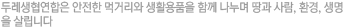
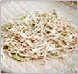
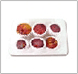
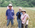
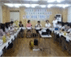
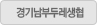

주메뉴
바로가기메뉴
본문내용
우리동네생협찾기
사이트 저작권
주메뉴
바로가기메뉴

로그인양식
공지사항탭메뉴
조합원님의 개인정보가 새로운 생협법인으로...
2011.08.16
7월 22일 창립총회를 통해 두레생협연합회가...
2011.08.16
생산자-조합원이 함께 자주인증제도를 더욱...
2011.08.16
(가칭)두레소비자생활협동조합연합회 창립...
2011.08.16
송아지입식기금 모금결과 입니다. 조합원...
2011.08.16
2011년 송아지입식기금 모금에 참여해주셔서...
2011.08.16
생산자-조합원이 함께 자주인증제도를 더욱...
2011.08.17
사랑과 정성이 가득한 생산지 사랑과 정성
2011.08.17
풍부한 유기물 토양, 축복받은 의성 생산지...
2011.08.176
조합원이 함께 만들어간 돌봄과 나눔의 공간...
2011.08.17
자주인증제 제3자 감사 강화
2011.08.17
연생위 사랑과정성 방문 소식
2011.08.17
2011 일본 그린코프 평화의 다리 방한단과...
2011.08.18
[연생위 생산지 방문]사랑과 정성을 다녀...
2011.08.18
고양파주두레생협, 돌봄과 나눔의 공간...
2011.08.18
구례에서 우리밀의 소중함을 수확하고...
2011.08.18
생명의 근본이 되는 주곡 생산지인 원주...
2011.08.18
5월 14일 공정무역의 날 행사에 다녀왔...
2011.08.18
우리동네 생협찾기
35주
08.21~08.25

무말림
2000원

무화가
13000원
브로콜리스프
3000원
어린이홍삼음료
23000원
생협식빵
3200원
물냉면
5100원
상황버섯
54000원
영지버섯
22000원
매실농축액
24900원
영상과 사진 게시판

장마가 10일 정도 일찍 온다기에 수확이 일찍 진행되겠구나. 크기는 좀 작겠구나. 혹시라도 비가...

지난 7월 22일 (가칭)두레소비자 생활협동조합연합회 창립총회가 동국대학교 문화관에서 열렸다,
지난 23일 일본 그린코프 평화의 다리 방한단과 경기남부두레생협의 교류회가 있었습니다.
지난 6월 29일 고양파주두레생협이 돌봄과 나눔의 공간 '선물' 오픈 기념행사를 열었습니다.
KBS에서 방송한 6시 내고향 방송중 다솜농장에 관한 내용입니다.이미지는 방송화면을 캡쳐한...
YMCA 등대생협 조합원들이 4대강 사업을 반대하는 신문광고를 진행하고 있습니다.
[강원유기농] 조합원 및 점장 여러...
11.08.16
[해남] 우여곡절 끝에 김장배추 공...
11.08.16
[팔당생명살림] 올해 농사는 정말...
11.08.16
[생활재] 삼베 세안타올,샤워타올...
11.08.16
[의성] 아삭하고 꿀맛나는 부사가...
11.08.16
[양평배] 냉해와 태풍을 이겨낸...
11.08.16
[의성] 달콤새콤한 의성 자두 밭에...
11.08.16
[강원유기농] 대파 사세요!
11.08.16
[강원유기농] 연생위 7월 생산지...
11.08.16
[강원] 강원유기농을 다녀와서
11.08.16
[사랑과정성] 생산지를 다녀와서...
11.08.16
[의성] 풋풋한 마늘 향이 나는 의성...
11.08.16
